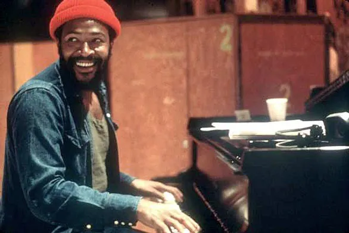

Kakehashi døde i en alder af 87 år i 2017 og efterlod en arv af kreationer, der havde en umådelig indflydelse på musik over hele verden. Kakehashi blev født i Osaka, Japan, og startede med at reparere ødelagte ure og ure, da han var 16 år og fik senere en uddannelse i maskinteknik. I 1960 fandt han vej til elektroniske instrumenter hos Ace Electronic Industries. Han størkede et navn for sig selv i 1972, da han grundlagde Roland Corporation og stod i spidsen for oprettelsen af synthesizere og trommemaskiner, herunder TR-808. Det var en af de tidligste programmerbare trommemaskiner i branchen, og det ændrede til sidst lyden af populær musik. Det, der gjorde 808 anderledes, var, at lydene ikke lignede ægte percussion og mere lignede en "futuristisk" fortolkning af almindelige lyde: bas, trommer, snare, cymbaler og mere. Maskinen skilte sig især ud for sin kraftfulde basstromlyd.
Da 808 første gang blev lanceret i 1980, mislykkedes det kommercielt. Oprindeligt blev det set som et legetøj, der lavede robotlyde, frem for et seriøst instrument. Elektronisk musik var ikke på mode endnu, og Roland indstillede 808 i 1983. Dens største rival, Linn LM-1, havde en skarpere lyd og mere salgssucces. Men 808 byggede en kultfølelse blandt underjordiske producenter. Det var mere overkommeligt (med en pris på 1.200 dollar i forhold til LM-1's $ 5.000), havde en lettere grænseflade og kom forudindlæst med 16 analoge lyde. Til sidst blev den brugt på flere hitplader end nogen anden trommemaskine, herunder hits som Whitney Houstons "I Wanna Dance With Somebody", SOS Bands "Just be Good To Me" og Talking Heads "Psycho Killer".

Marvin Gaye - Foto fra The Selvedge Yard
Trommemaskinens fremkomst var afgørende for dannelsen af hele musikområder-især hip-hop, men også undergenrer som Miami bas, acid house og Detroit techno. Før 808 ville producenterne grave efter tromleprøver og omhyggeligt sløjfe dem for at skabe originale trommemønstre. Med ankomsten af trommemaskiner blev prøver og levende trommeslagere unødvendige. Producenter var i stand til at finjustere deres egne mønstre ud af 808'ernes "robot" og "legetøjslignende" lyde, hvilket gjorde det muligt for næsten alle at producere musik. Trommemaskiner som 808 affødte æraen med "soveværelsesproducenter" som Rick Rubin (der brugte en 808 i sin NYU -kollegie) og Pete Rock. Afrika Bambaataa var den første hip-hop-akt, der lagde maskinen på landkortet med sin skelsættende plade "Planet Rock" fra 1982. Det ramte også den almindelige succes med Marvin Gayes hit fra 1982 "Sexual Healing".
Næsten 40 år efter, at 808 kom på markedet, er hip-hop stadig afhængig af maskinen, og utallige copycat-kits er blevet bygget og delt online for at efterligne de originale lyde af dens skarpe høj hat, snare og cowbell. Det er en efterspurgt lyd, hvor de fleste producenter hævder, at kopierne ikke er i nærheden af originalens sære toner. 808 endte med at blive brugt af ikoniske handlinger som Run-DMC, Beastie Boys, LL Cool J og Public Enemy. Kanye West dedikerede endda et helt album til lyden, hvor hver sang brugte en 808, hvor den mest populære var "Love Lockdown." 808 -lyden i begyndelsen af nummeret lignes med et hjerteslag, måske den tydeligste sammenligning af, hvad en stærk 808 -lyd er. Der er endda en dokumentar i fuld længde kaldet 808, der sporer maskinens betydning.
808 blev en fast del af hip-hop-kulturen, ikke kun som et redskab for producenter, men som en definerende lyd af genren. Da New York-epicenteret for hip-hop begyndte at bevæge sig mod andre maskiner i 1990'erne, havde 808 rødderne i det sydlige hip-hop med kunstnere som Lil Jon (der endda er blevet beskyldt for at have brugt for meget håndklap). Det er stadig lige så afgørende som nogensinde og har affødt oprettelsen af produktionsgrupper som 808 Mafia (Southside & Lex Luger), der ofte krediteres med at have skabt Atlantas "trap" -lyd, hvor et af signaturelementerne er 808 basstrommen. Trap -producenterne Metro Boomin og Sonny Digital er også stærkt afhængige af 808 -lyden, og de er ansvarlige for, at 90 procent af nutidens mest populære Migos- og Future -plader - "Mask Off" er den seneste. De fleste, hvis ikke alle, chart-topping hip-hop plader i dag og i de sidste 30 år har sandsynligvis brugt et element af en 808.
Træd uden for hip-hop, og 808-arven kan findes andre steder, især i popmusik. Fra begyndelsen så tidligt som Cybotrons "Clear" og hørt så sent som Jamie XXs "Gosh", bragte 808 et nyt niveau af power i popens lyd. Det blev også stærkt brugt i nutidens EDM, hvor kunstnere som Diplo og David Guetta kæmpede for sine elementer i singler og samarbejder.
808 nedbrød væggene mellem genrer og affødte samarbejde mellem nogle af de største handlinger fra forskellige rum. Fordi 808 var så tilpasningsdygtig, var det som den første open source-lyd, hvor kunstnere byggede på hinandens fortolkninger og gjorde den til deres egen. Lil Jon og Usher's "Yeah" var et usandsynligt samarbejde, der fremviste en R & B -sanger på en 808 og gjorde Usher øjeblikkeligt relevant igen. Marvin Gayes “Sexual Healing” er ikke i nærheden af en hip-hop eller techno-rekord, men alligevel var den helt afhængig af 808. 808 er som den ikke-så hemmelige sauce af hitplader-drys i en 808 tromme, og din sang med det samme lyder bedre.
TR-808 tvang kunstnere til at tænke anderledes om ikke kun beatkonstruktionerne, men om strømninger og melodier. Uden mangel på festivaler og klubber i 2017 er 808 det kritiske element designet til enorme højttalere og klubsystemer. Det er sikkert at sige, at producenter i dag opretter plader med dette for øje. Selvom 808 på kort tid etablerede sig som et magisk redskab for studie -nørder og produktive kunstnere, udvikler arven sig stadig hver dag. Mulighederne er uendelige, og vi har Ikutaro Kakehashi at takke for det.